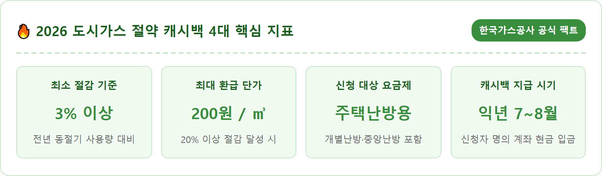
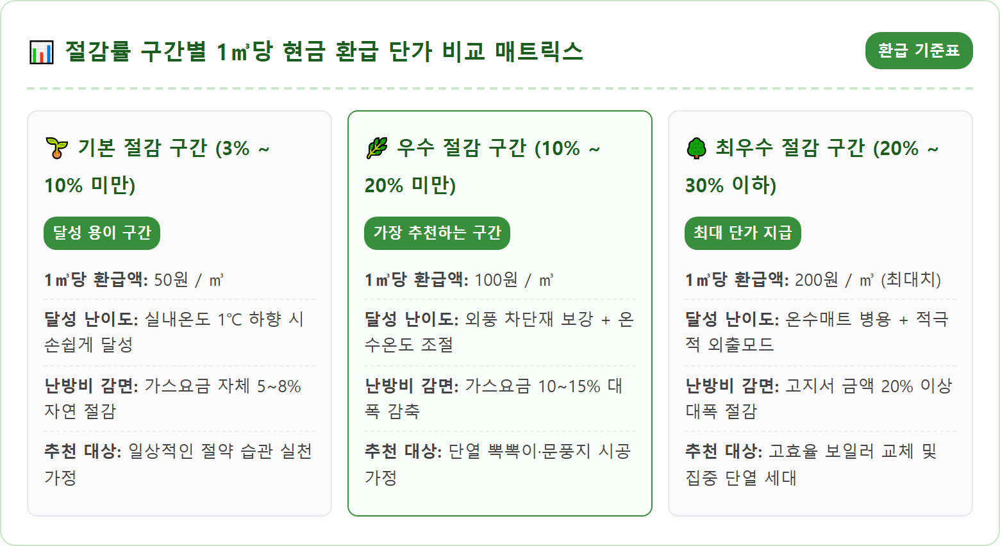
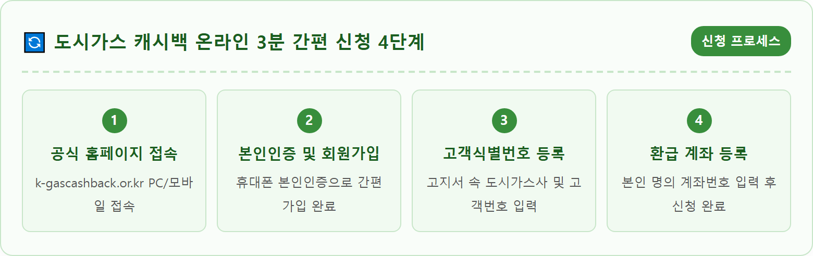
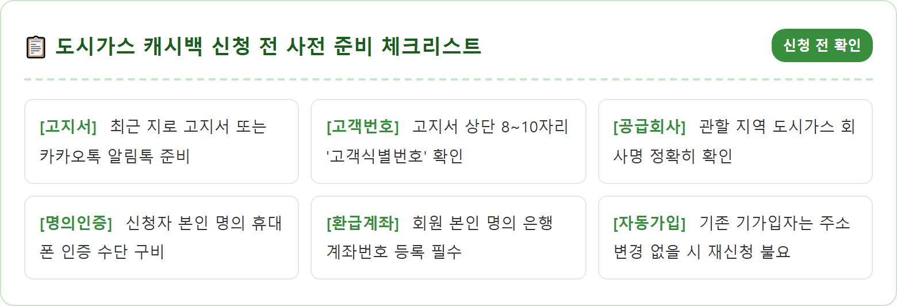
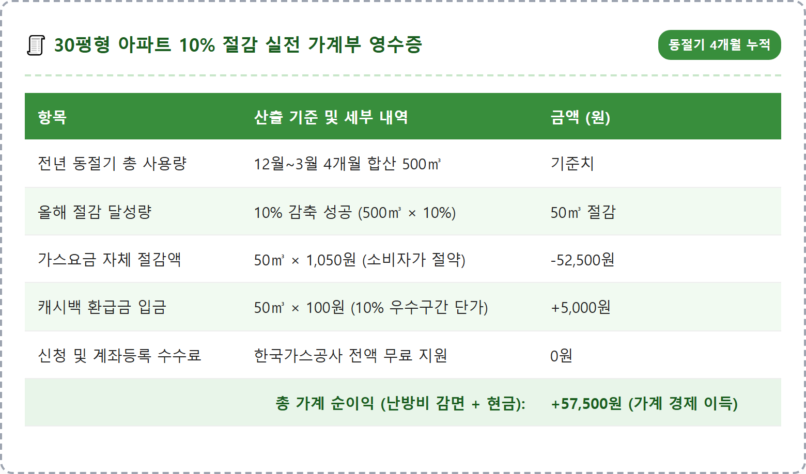
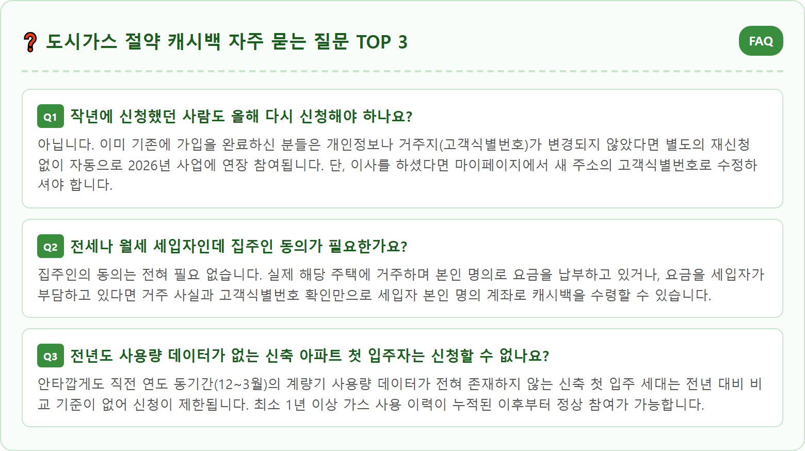

2026 도시가스 절약 캐시백 신청 기간 — 전년 대비 3%만 줄여도 돌려받는 환급금 계산법
2026년 동절기 한국가스공사 '도시가스 절약 캐시백(K-가스캐시백)'의 공식 신청 기간은 2026년 12월 1일부터 2027년 3월 31일까지이며, 직전 동절기 대비 도시가스 사용량을 3% 이상만 절감해도 1㎥당 최대 200원의 현금을 계좌로 돌려받을 수 있습니다.
주택난방용(개별난방 및 중앙난방) 도시가스를 사용하는 국민이라면 누구나 공식 웹사이트(k-gascashback.or.kr)에서 회원가입 후 참여할 수 있습니다. 3%~30% 절감률 구간별 캐시백 단가 비교표, 30평형 아파트 기준 실제 난방비 절감액 및 환급금 모의 계산, 도시가스 지로 고지서에서 고객식별번호를 찾아 3분 만에 접수하는 실무 절차까지 총정리해 드립니다.
📷 AI 대표 메인 썸네일 생성 영역images/261021/5_hot_city_gas_winter_cashback_application_guide_1.png
A realistic and modern conceptual photograph representing winter residential city gas energy savings and cashback reward in South Korea. On a warm wooden table, a smartphone displays the official energy cashback application portal screen next to an official city gas billing invoice with highlighted customer identification numbers. Next to the phone sits a transparent glass piggy bank containing Korean won paper bills and coins, alongside a modern digital room thermostat showing 20 degrees Celsius. Soft warm indoor morning light illuminates the cozy living room scene with an insulated window in the background. Ultra high detail, 8k resolution, crisp commercial photography, 1:1 aspect ratio.
2026 도시가스 절약 캐시백 신청 화면과 지로 고지서 고객번호 확인 / AI 제작 이미지

도시가스 절약 캐시백 4대 핵심 지표 / 인포그래픽 카드
01 | 한국가스공사 도시가스 절약 캐시백(K-가스캐시백)의 도입 배경과 취지
겨울철 난방비 고지서를 받아 들 때마다 급증한 가스 요금으로 가계 부담을 느끼는 분들이 많습니다.
한국가스공사(KOGAS)에서 전 국민을 대상으로 시행하는 '도시가스 절약 캐시백(K-가스캐시백)'은 동절기 국가 에너지 소비를 줄이고 국민들의 난방비 부담을 실질적으로 덜어주기 위해 도입된 대국민 인센티브 제도입니다.
우리나라는 겨울철 난방용 천연가스(LNG)를 전량 해외 수입에 의존하고 있어, 국제 에너지 가격 변동에 따른 무역수지 악화와 공급 불안정성을 완화하는 것이 국가적인 핵심 과제입니다.
이에 따라 정부와 가스공사는 강제적인 소비 규제 대신, 국민들의 자발적인 에너지 절약 노력을 유도하고 그에 상응하는 경제적 보상을 직접 제공하는 시장 친화적 정책 모델을 확립하였습니다.
동절기(12월부터 이듬해 3월까지) 동안 각 가정에서 사용하는 도시가스 소비량을 직전 2개년 평균 혹은 전년도 동일 기간 사용량과 비교하여, 사용량을 3% 이상 줄이는 데 성공하면 절감한 가스 소비량(㎥)에 비례하여 현금으로 돌려주는 파격적인 혜택을 제공합니다.
단순히 가스 사용량을 줄여 매월 청구되는 도시가스 요금을 아끼는 일차적 절약 효과에 더하여, 국가 공기업으로부터 수만 원에서 십수만 원의 '현금 캐시백'까지 추가로 환급받는 이중의 금전적 혜택을 누릴 수 있습니다.
한 번 신청해 두면 계량기 검침 데이터를 통해 한국가스공사가 시스템상에서 자동으로 절감률을 산정하고 현금을 입금해주므로, 난방용 도시가스를 쓰는 가정이라면 신청하지 않을 이유가 없는 필수 생활 정책입니다.
02 | 2026년 동절기 신청 기간과 절감 평가 기간(12월~3월) 일정표
도시가스 절약 캐시백의 일정은 '신청 기간'과 '절감 평가 기간', 그리고 '정산 및 지급 기간'으로 명확하게 나뉩니다.
신청 접수 기간은 매년 12월 1일부터 이듬해 3월 31일까지 4개월 동안 진행됩니다.
11월부터는 공식 누리집을 통해 제도 사전 공지와 회원가입 준비가 가능하며, 12월 1일 시스템이 정식 오픈되면 본격적인 참여 등록이 시작됩니다.
신청 시점과 무관하게 12월 중에 신청하든, 이듬해 3월 말에 신청하든 12월부터 3월까지 4개월간의 전체 사용량을 소급하여 일괄 평가하므로 마감 전까지만 신청하면 혜택에 불이익이 없습니다.
따라서 12월 초순에 신청을 미처 하지 못하셨더라도 1월이나 2월에 언제든 등록하시면 동절기 전체 절감 실적을 인정받을 수 있습니다.
절감 평가 기간은 12월 1일부터 3월 31일까지(고지서 청구월 기준 통상 1월~4월 고지분)의 누적 사용량을 기준으로 합니다.
이후 4월부터 6월까지 각 지역 도시가스사의 최종 검침 데이터가 취합되어 가스공사 전산망에서 절감률 검증 및 산정이 이루어집니다.
데이터 대조 과정에서 기상청의 겨울철 평균 기온 편차를 보정하여 공정하고 객관적인 평가 기준을 적용합니다.
최종 확정된 환급금은 해당 연도 7월부터 8월 사이에 신청자가 등록한 본인 명의 은행 계좌로 현금 입금됩니다.

도시가스 절약 캐시백 절감률 구간별 환급 단가 비교 / 인포그래픽 카드
03 | 참여 대상 자격 기준 — 개별난방·중앙난방 포함과 취사·지역난방 제외 조건
도시가스 절약 캐시백에 참여하기 위해서는 거주 중인 주택의 도시가스 요금제 종류를 정확히 파악해야 합니다.
신청 대상은 도시가스사(서울도시가스, 삼천리, 귀뚜라미에너지, 예스코, 경동도시가스 등 전국 34개사)로부터 가스를 공급받는 '주택난방용(개별난방 및 중앙난방)' 요금제 사용자입니다.
아파트, 빌라, 다세대주택, 단독주택 등 주택의 형태와 무관하게 난방용 도시가스를 개별 보일러로 사용하거나 아파트 단지 중앙보일러로 공급받는 경우 모두 대상에 포함됩니다.
임차인(월세·전세 세입자)이라도 현재 해당 주택에 거주하며 본인 명의나 세대주 명의로 도시가스 요금을 납부하고 있다면 아무런 제약 없이 신청할 수 있습니다.
집주인의 별도 서명이나 동의 절차가 필요 없으므로 세입자분들도 부담 없이 본인 계좌로 환급금을 신청하시면 됩니다.
반면, 지원 대상에서 제외되는 경우도 명확합니다.
첫째, 한국지역난방공사나 집단에너지사업자로부터 열을 공급받는 '지역난방(열병합 발전)' 사용 가구는 도시가스로 난방을 하지 않으므로 제외됩니다.
둘째, 도시가스를 사용하더라도 난방은 전기나 기름보일러로 하고 가스는 오직 가스레인지 음식 조리에만 쓰는 '취사 전용' 요금제 가구는 제외됩니다.
셋째, 상가, 식당, 공장 등에서 사용하는 일반용·산업용·영업용 요금제 역시 참여할 수 없습니다.
04 | 3%만 줄여도 환급되는 절감률 구간별 ㎥당 지급 단가(50원~200원) 비교표
도시가스 절약 캐시백의 가장 큰 장점은 진입 장벽이 낮다는 점입니다.
과거에는 7%나 10% 이상 대폭 줄여야만 환급을 해주었으나, 국민 참여 확대를 위해 최소 절감 기준이 전년 대비 3%로 대폭 완화되었습니다.
절감률 구간에 따라 1㎥당 현금 단가가 3단계로 차등 책정됩니다.
① 3% 이상 ~ 10% 미만 절감 시: 1㎥당 50원 지급
실내 온도를 평소보다 1도 낮추거나 샤워 시간을 약간만 단축해도 가뿐하게 달성할 수 있는 구간입니다.
② 10% 이상 ~ 20% 미만 절감 시: 1㎥당 100원 지급
창문에 뽁뽁이를 붙이고 보일러 외출 기능을 적극 활용할 때 도달할 수 있는 가장 추천하는 실속 구간입니다.
③ 20% 이상 ~ 30% 이하 절감 시: 1㎥당 200원 지급
전년 대비 20% 이상 절감에 성공하면 1㎥당 200원의 최고 단가가 적용되어 환급금 액수가 비약적으로 커집니다.
단, 정상적인 일상생활 유지를 고려하여 절감률 상한선은 30%로 제한되며, 30%를 초과하여 절감하더라도 최대 30%에 해당하는 절감량까지만 단가가 적용됩니다.
이는 과도한 에너지 절약으로 인한 저체온증이나 동파 사고를 예방하고 건강한 에너지 소비를 장려하기 위한 제도적 안전장치입니다.

도시가스 절약 캐시백 온라인 신청 4단계 절차 플로우 / 인포그래픽 카드
05 | 30평형 아파트 기준 5%·10% 절감 시 실제로 돌려받는 현금 모의 계산
그렇다면 실제로 일반 가정에서 5% 혹은 10%를 절감했을 때 돌려받는 금액과 아끼는 난방비는 총 얼마일까요?
수도권 30평형(전용 84㎡) 아파트의 동절기 4개월(12~3월) 평균 도시가스 사용량은 통상 약 500㎥(월평균 125㎥ 수준)입니다.
이를 기준으로 모의 계산을 진행해보겠습니다.
사례 1: 5% 절감에 성공한 경우
• 절감량: 500㎥ × 5% = 25㎥ 절감
• 적용 단가: 3~10% 구간이므로 1㎥당 50원 적용
• 돌려받는 캐시백: 25㎥ × 50원 = 1,250원
• 가스요금 자체 절감액: 25㎥ × 약 1,050원(도시가스 소비자가) = 약 26,250원 절약
• 총 경제적 혜택: 약 27,500원 절감
사례 2: 10% 절감에 성공한 경우
• 절감량: 500㎥ × 10% = 50㎥ 절감
• 적용 단가: 10~20% 구간이므로 1㎥당 100원 적용
• 돌려받는 캐시백: 50㎥ × 100원 = 5,000원 현금 입금
• 가스요금 자체 절감액: 50㎥ × 약 1,050원 = 약 52,500원 절약
• 총 경제적 혜택: 약 57,500원 절감
사례 3: 단열 보강으로 20% 절감에 성공한 경우
• 절감량: 500㎥ × 20% = 100㎥ 절감
• 적용 단가: 20% 이상 구간이므로 1㎥당 200원 최고 단가 적용
• 돌려받는 캐시백: 100㎥ × 200원 = 20,000원 현금 입금
• 가스요금 자체 절감액: 100㎥ × 약 1,050원 = 약 105,000원 절약
• 총 경제적 혜택: 약 125,000원 절감
단순히 캐시백 금액만 보면 몇만 원 수준일 수 있지만, 그로 인해 아끼게 되는 실제 난방비 청구액을 합치면 한 겨울에 12만 원 이상의 거금을 고스란히 통장에 남길 수 있습니다.
아낀 난방비로 가족들과 따뜻한 겨울 외식을 즐기거나 다른 공과금을 납부하는 쏠쏠한 재테크 효과를 누려보세요.

도시가스 절약 캐시백 신청 전 준비물 및 자격 체크리스트 / 인포그래픽 카드
06 | 고지서에서 '도시가스 고객식별번호' 확인하고 공식 웹사이트 회원가입하는 순서
신청 과정은 매우 간단하며 3분이면 충분히 완료할 수 있습니다.
가장 먼저 준비해야 할 것은 '도시가스 지로 고지서' 혹은 매달 받는 '카카오톡 모바일 청구서'입니다.
고지서 우측 상단이나 좌측 기본 정보란을 보면 '고객식별번호(또는 납부자번호, 고객번호)'라는 이름으로 적힌 8자리에서 10자리의 고유 숫자가 있습니다.
이 번호는 주택의 계량기 및 가스 배관과 1:1로 매칭되는 고유 번호이므로 정확하게 메모해 둡니다.
아파트의 경우 관리비 고지서에 도시가스 항목이 합산 청구되는 중앙난방 단지라면 관리사무소에 문의하여 단지 고객식별번호를 확인하거나 개별 계량기 번호를 안내받으셔야 합니다.
번호를 확인했다면 인터넷 검색창에 '도시가스 절약 캐시백(k-gascashback.or.kr)'을 입력해 공식 포털로 접속합니다.
화면 상단의 [회원가입] 버튼을 누르고 휴대폰 본인인증을 진행합니다.
회원 유형에서 [개인회원]을 선택한 후, 본인이 거주하는 지역의 도시가스 공급회사(예: 서울도시가스, 예스코, 대륜E&S 등)를 선택하고 앞서 메모한 고객식별번호를 입력합니다.
조회 버튼을 누르면 본인의 주소지와 계량기 정보가 자동으로 화면에 표시되며, 정보가 일치하면 환급금을 수령할 본인 명의 계좌번호를 등록하고 신청을 완료하면 끝납니다.
신청 완료 후 카카오톡 알림톡으로 정상 접수 안내 메시지가 발송되므로 접수 결과를 즉시 확인하실 수 있습니다.

30평형 아파트 10% 절감 시 실전 난방비 절감 및 캐시백 정산 영수증 / 인포그래픽 카드
07 | 이사했거나 명의 변경 시 캐시백 승계 여부와 마이페이지 정보 수정 요령
도시가스 절약 캐시백을 이용할 때 가장 많은 질문이 발생하는 상황이 바로 '이사'와 '세대주 명의 변경'입니다.
원칙적으로 도시가스 절약 캐시백은 '회원 개인'과 '주택의 고객식별번호'가 결합하여 산정됩니다.
따라서 동절기 평가 기간(12월~3월) 도중에 다른 집으로 이사를 가게 되면 계량기 식별번호가 변경되므로 전년 동기간 대비 데이터의 연속성이 끊어져 해당 연도 캐시백 지급이 불가능해집니다.
이사 계획이 12월~3월 사이에 잡혀 있다면 절감 평가를 완료하기 어려우므로 유의하셔야 합니다.
반면, 동절기 평가가 끝난 후 봄이나 초여름(4월~6월)에 이사를 간 경우라면 마이페이지에서 반드시 주소지와 환급 계좌가 정상인지 확인해 두셔야 정상 입금받을 수 있습니다.
또한 한 번 가입해 둔 회원은 다음 연도 사업에도 별도의 재신청 없이 자동으로 계속 참여 상태가 유지됩니다.
단, 이사를 하여 새로운 주소지로 전입한 경우에는 공식 웹사이트 마이페이지에서 기존 고객식별번호를 삭제하고 새로 이사한 집의 고지서 번호로 '고객정보 변경 등록'을 진행해야만 다음 해에 새로운 집 기준으로 캐시백을 받으실 수 있습니다.
명의 변경의 경우, 요금 납부자가 가족 구성원 내에서 바뀌더라도 계량기 식별번호와 실거주자가 동일하다면 기존 신청자의 계좌로 정상 환급됩니다.
08 | 보일러 외출모드 활용과 단열재 보강으로 실사용량 10% 줄이는 실무 팁
난방 온도를 무작정 낮춰 집안에서 오들오들 떨며 지내는 것은 올바른 절약 방법이 아닙니다.
실내 쾌적성을 유지하면서도 손쉽게 가스 사용량을 10% 이상 감축할 수 있는 핵심 기술 4가지를 소개해 드립니다.
첫째, 실내 희망 온도는 20~21℃로 설정하세요.
난방 온도를 1도 낮출 때마다 도시가스 사용량은 약 7%씩 절감됩니다. 실내에서 기모 양말과 수면 바지, 얇은 카디건을 걸치면 체감온도가 2~3도 올라가 20도 설정만으로도 충분히 따뜻하게 지낼 수 있습니다.
둘째, 외출 시 보일러를 끄지 말고 '외출 모드'나 '희망 온도 -2~3℃'로 맞추세요.
외출할 때 보일러를 완전히 꺼버리면 실내 바닥이 완전히 식어버려 귀가 후 다시 온도를 올릴 때 보일러가 최대 출력으로 가동되어 가스가 폭발적으로 낭비됩니다.
단기간 외출 시에는 17~18도로 설정해 두는 것이 가스를 훨씬 적게 씁니다.
셋째, 온수 온도를 '중(45~50℃)'으로 조정하세요.
보일러 가스 소비량의 70%는 방바닥 난방보다 찬물을 순간적으로 끓여내는 '온수'에서 소비됩니다. 온수 온도를 최고(60~70℃)로 맞추고 찬물을 섞어 쓰는 것은 엄청난 에너지 낭비이므로, 온수를 '중'으로 낮추는 것만으로도 가스비를 눈에 띄게 줄일 수 있습니다.
넷째, 창문에 단열 뽁뽁이를 붙이고 문풍지로 틈새 외풍을 차단하세요.
창문을 통한 열 손실을 막아주면 실내 온기가 2~3시간 이상 오래 지속되어 보일러 재가동 횟수가 절반으로 줄어듭니다.
가습기를 함께 틀어 실내 습도를 40~60%로 유지하면 공기 순환이 빨라져 바닥 온기가 방안 전체로 골고루 퍼지는 열전도 효과를 얻을 수 있습니다.

도시가스 절약 캐시백 자주 묻는 질문 FAQ / 인포그래픽 카드
09 | 도시가스 절약 캐시백 참여 요약과 마무리 당부
2026년 도시가스 절약 캐시백은 고물가 시대에 가계 난방비 부담을 덜고 탄소 배출을 줄여 환경을 보호하는 가장 똑똑한 생활 속 실천입니다.
신청에 소요되는 시간은 불과 3분 안팎이지만, 그 작은 실천이 가져다주는 보상은 한 겨울 난방비 수만 원 감면과 기분 좋은 현금 캐시백으로 돌아옵니다.
지로 영수증이나 모바일 고지서 속 고객식별번호를 지금 즉시 확인하시고, 12월 1일 신청 창구가 열리는 즉시 가족과 이웃들에게도 널리 알려 함께 참여해보시기 바랍니다.
난방비를 아끼는 지혜는 큰돈을 들이지 않고도 작은 생활 습관의 변화에서 시작됩니다.
올겨울, 스마트한 보일러 운용과 따뜻한 단열 생활을 통해 우리 집 난방비도 아끼고 기분 좋은 현금 환급 혜택도 가득 누려보시길 응원합니다.